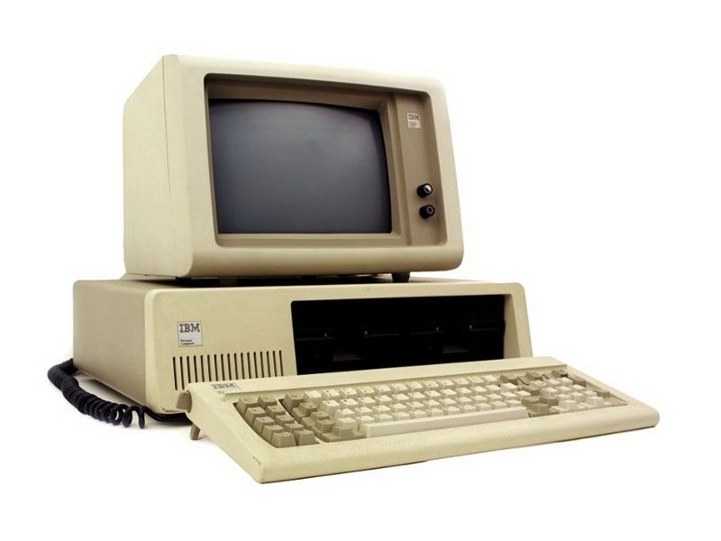
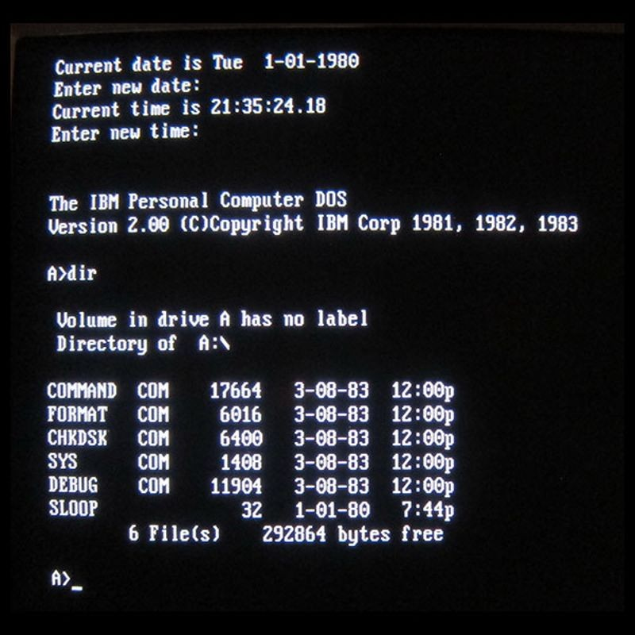
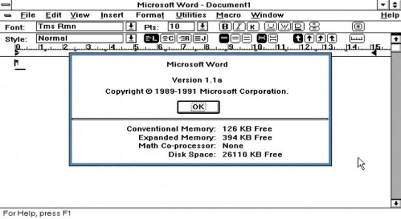

|

IBM's brand recognition, along with a massive marketing campaign, ignites the fast growth of the personal computer market with the announcement of its own personal computer (PC). The first IBM PC, formally known as the IBM Model 5150, was based on a 4.77 MHz Intel 8088 microprocessor and used Microsoft´s MS-DOS operating system. The IBM PC revolutionized business computing by becoming the first PC to gain widespread adoption by industry. The IBM PC was widely copied (“cloned”) and led to the creation of a vast “ecosystem” of software, peripherals, and other commodities for use with the platform. |
|---|
|

MS-DOS, or Microsoft Disk Operating System, the basic software for the newly released IBM PC, is the start of a long partnership between IBM and Microsoft, which Bill Gates and Paul Allen had founded only six years earlier. IBM’s PC inspired hardware imitators in the 1980s, but for software, most licensed MS-DOS. MS-DOS was eventually supplanted by Microsoft’s Windows operating system. |
|---|
|

Microsoft announces Word, originally called Multi-Tool Word. In a marketing blitz, Microsoft distributed 450,000 disks containing a demonstration version of its Word program in the November issue of PC World magazine, giving readers a chance to try the program for free. It competed with WordPerfect for market share as a word processing program, and it was not until Microsoft Word for Windows was introduced in 1989 that it became a global standard. |
|---|